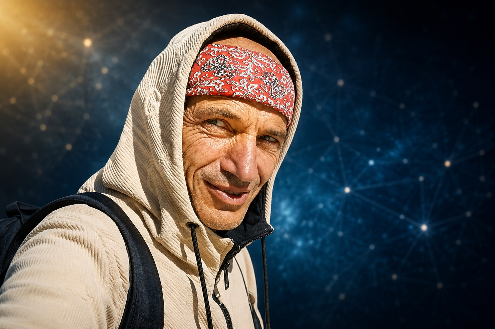

Meet Manu
Science. Consciousness. Human Potential.
My life has been a journey at the intersection of science, consciousness, spirituality, and human potential.
This search has taken me through diverse paths — from the study and practice of meditation, consciousness development, and ancient spiritual traditions, to independent technological research and citizen science initiatives.
Throughout this journey, I have sought not only to understand reality intellectually, but also to explore it through direct personal experience.
Spiritual Exploration
Over the years, my inner search has included the study and practice of several spiritual traditions and systems of consciousness development.
Transcendental Meditation
The practice of Transcendental Meditation and the TM-Sidhi programme opened for me a direct experience of consciousness as something practical, experiential, and deeply transformative.
Peter Deunov
As a Bulgarian, the teachings of Peter Deunov / Beinsa Douno have been a profound part of my spiritual environment, especially through music, Paneurhythmy, prayer, nature, and the vision of a more awakened humanity.
Ashram Life in India
Extended time in a Hindu ashram gave me direct experience of spiritual community, disciplined practice, service, and the living atmosphere of Vedic tradition.
Hare Krishna Tradition
My more recent connection with the Hare Krishna / Vaishnava tradition has deepened my appreciation for devotion, sacred community, cow protection, and practical spiritual service.
From Technology To Human Signal
Alongside my spiritual exploration, I developed a strong interest in technology and its relationship to human health, freedom, and consciousness.
Independent Technology Exploration
My interest in technology began as practical exploration and gradually developed into a deeper investigation of how technological systems may interact with human life, perception, health, and freedom.
Bluetooth Police
In 2022, I founded the Bluetooth Police initiative as an early citizen-science project dedicated to investigating unusual wireless signal phenomena associated with the human body.
Testing And Research Coordination
What began as a personal investigation gradually evolved into broader research activity involving independent testing methodologies, public education, and collaboration with others exploring this emerging field.
The Human Signal Project
The Human Signal Project represents the next stage of this journey: a more mature, research-oriented, and solution-focused initiative dedicated to human sovereignty, consciousness, and practical investigation.
Why I Created The Human Signal Project
I founded this initiative to create a platform for independent research, public awareness, international collaboration, practical testing, and the exploration of possible solutions.
My intention is not merely to raise questions, but to help build a global community capable of investigating these questions responsibly, openly, and compassionately.
I believe that humanity’s greatest technologies may still reside within the human being itself. The future of human evolution should remain a conscious choice.
It is something we consciously create together.